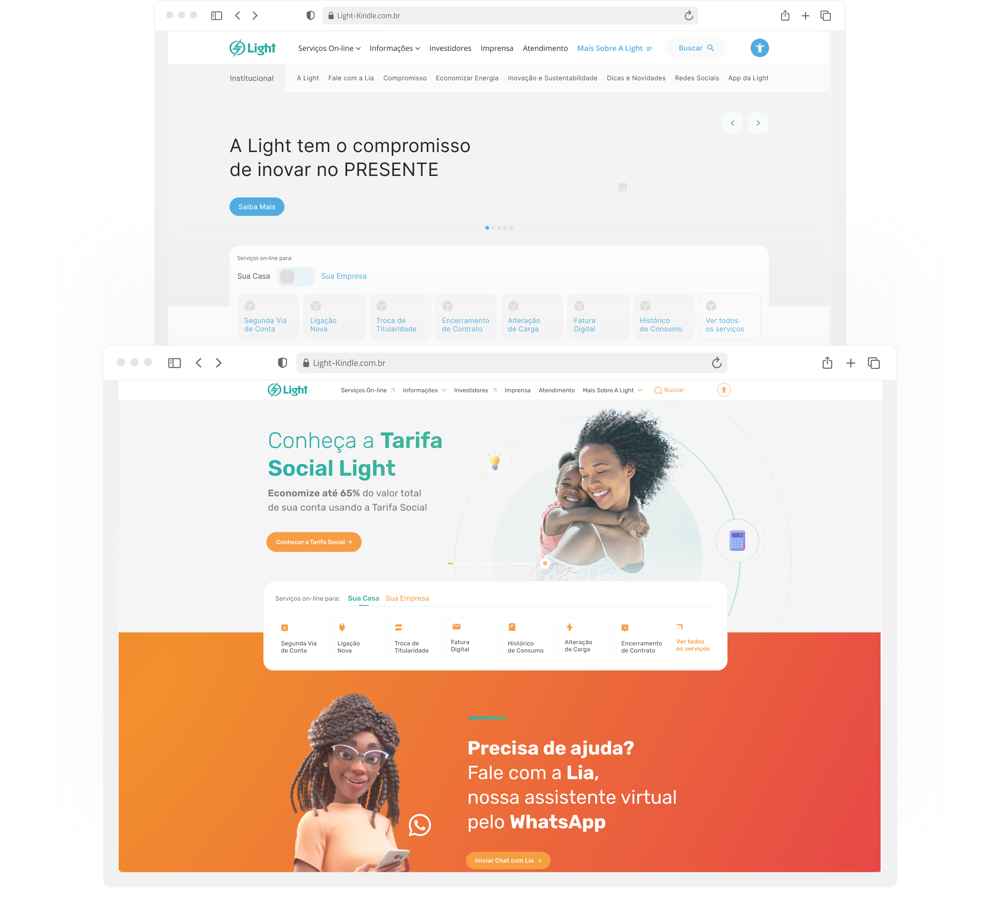
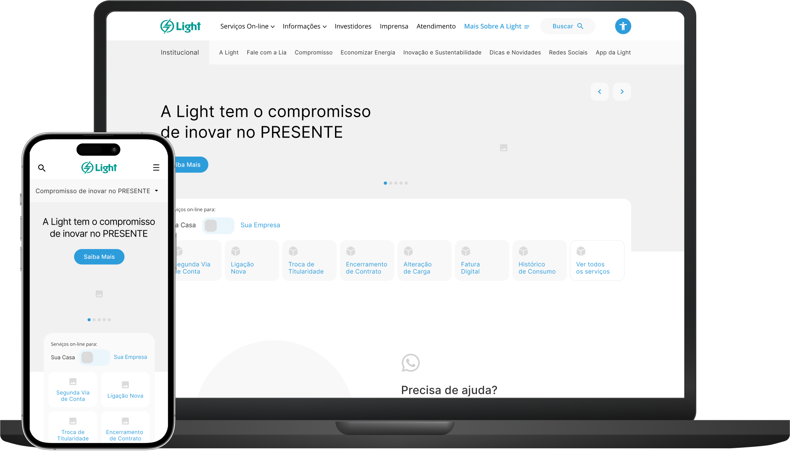
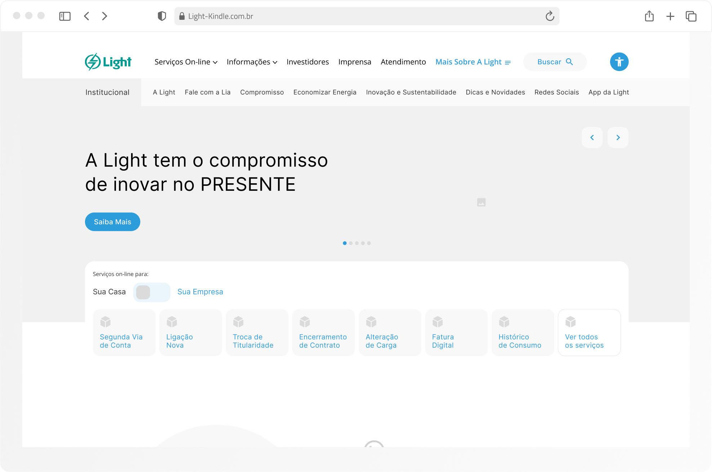
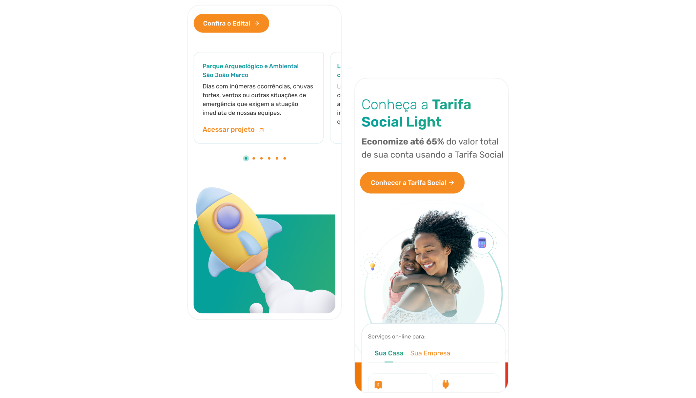
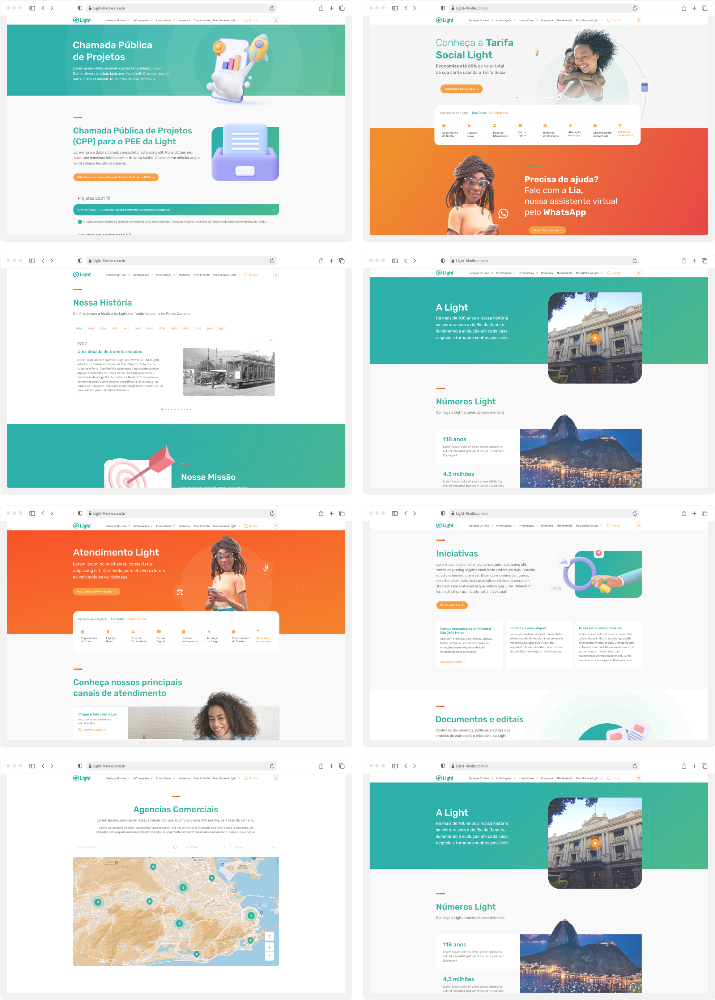

Nossa jornada com a Light, empresa de energia com mais de cem anos de experiência no mercado, representa um marco na transformação da experiência digital da empresa e no aprimoramento do relacionamento com seus clientes. No cerne deste projeto está o compromisso de entregar a Light um site inovador e acessível, que satisfaça tanto seus colaboradores quanto os milhões de clientes que confiam em seus serviços.
Realizamos mais de 20 horas de entrevistas com gerentes, coordenadores e usuários, identificando as principais dores e desafios em relação ao site anterior. Cada conversa revelou uma peça do quebra-cabeça, guiando-nos na criação das soluções.
Desenvolver uma proposta de melhorias significativas e uma taxonomia eficaz para um site tão complexo não foi tarefa simples. Aprofundamos a análise e garantimos que cada área da Light fosse atendida. O desafio aqui foi equilibrar inovação com a compreensão das necessidades dos usuários, que estão dentro de um leque amplo. Focamos nosso caminho nas principais dores vistas em nossas entrevistas e somamos a uma análise de Benchmarks dos principais concorrentes do mercado brasileiro e mundial.
Com o entendimento claro das necessidades, criamos um protótipo funcional, uma fase que exigiu atenção meticulosa. Usando o método Scrum, apresentamos e aprimoramos mais de 150 páginas, ouvindo atentamente o feedback dos gerentes da Light, com sprints de entregas semanais. Nossa maior conquista foi transformar ideias em experiências tangíveis e aprovar com louvor o protótipo criado junto a diretoria da empresa.
Na etapa 2 do projeto, layout e desenvolvimento, o desafio era trazer à vida o protótipo, assegurando que cada componente refletisse a identidade da marca Light. Ainda usando a metodologia Scrum, nos reunimos semanalmente apresentando uma quantidade pré-definida de páginas obtendo feedbacks e garantindo que cada uma atendesse às necessidades dos usuários.
De acordo com estudo da OMS e do Banco Mundial, cerca de 15% da população convive com alguma deficiência em todo o mundo.Com a diferenciação das áreas da Light e a necessidade de acomodar um público diverso. Nos preocupamos em criar um produto inclusivo. Com isso, além de criar uma paleta de cores e comunicação acessíveis, desenvolvemos todo o site levando em consideração a recomendação da W3C Accessibility Standards Overview. Além disso, estudamos, sugerimos e instalamos ferramentas de acessibilidade para garantir que o site seja amigável para todos, independentemente de suas habilidades.
